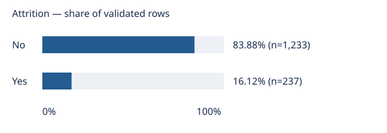

Employee attrition overview
Offline portfolio demo · checked-in aggregate EDA snapshot
Overall label distribution in the fictional IBM HR dataset. This view summarizes the sample, not reasons for leaving.
- Sample rows
- 1,470
- Attrition = Yes
- 16.12%

| Attrition | Count | Share |
|---|---|---|
| No | 1,233 | 83.88% |
| Yes | 237 | 16.12% |
Evidence and limits
Values are copied from the checked-in overview CSV and label counts CSV, rounded to two decimals. Tests check this page against those aggregates. No employee-level records are included.
This is not an annual attrition rate: no observation window or sampling design is established. These are descriptive frequencies, not causal findings or population estimates. Do not use this work for individual employment decisions.
Read the EDA report for method and provenance. This static snapshot does not automatically refresh when the CSV files change.